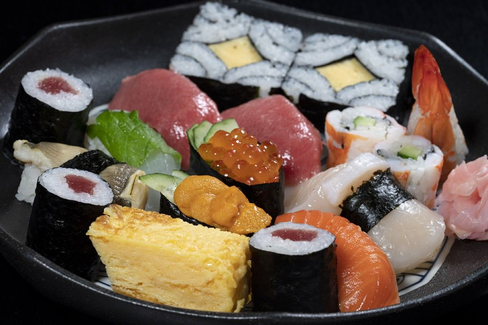
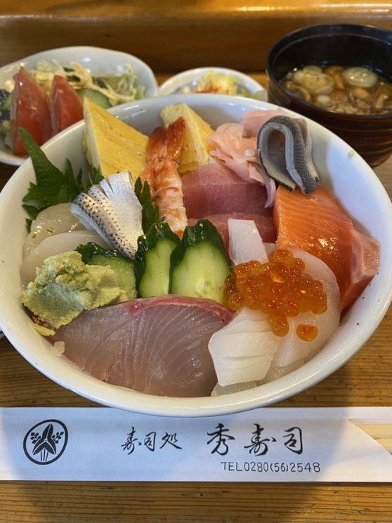
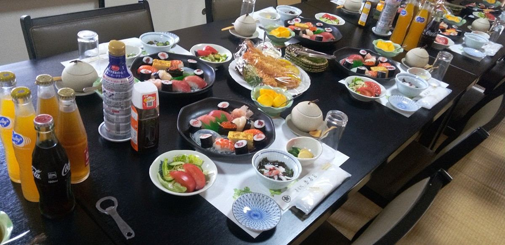
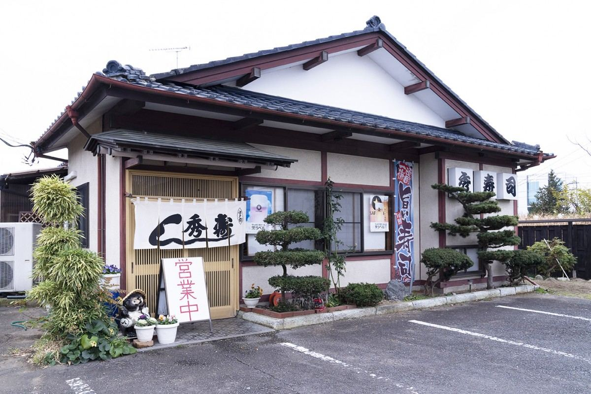
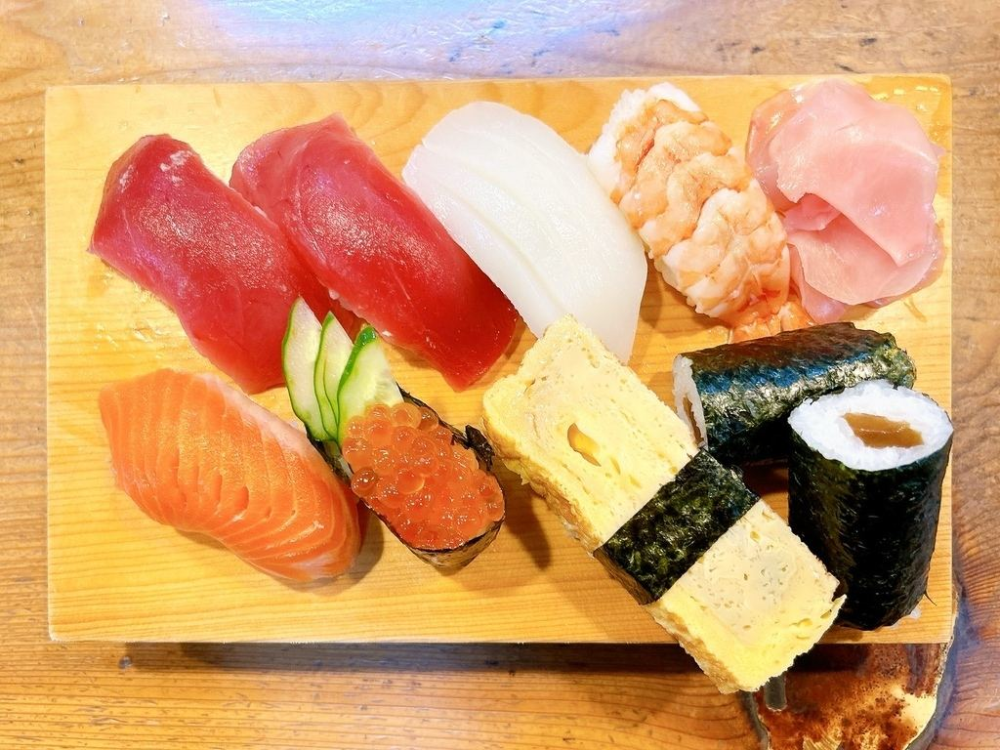
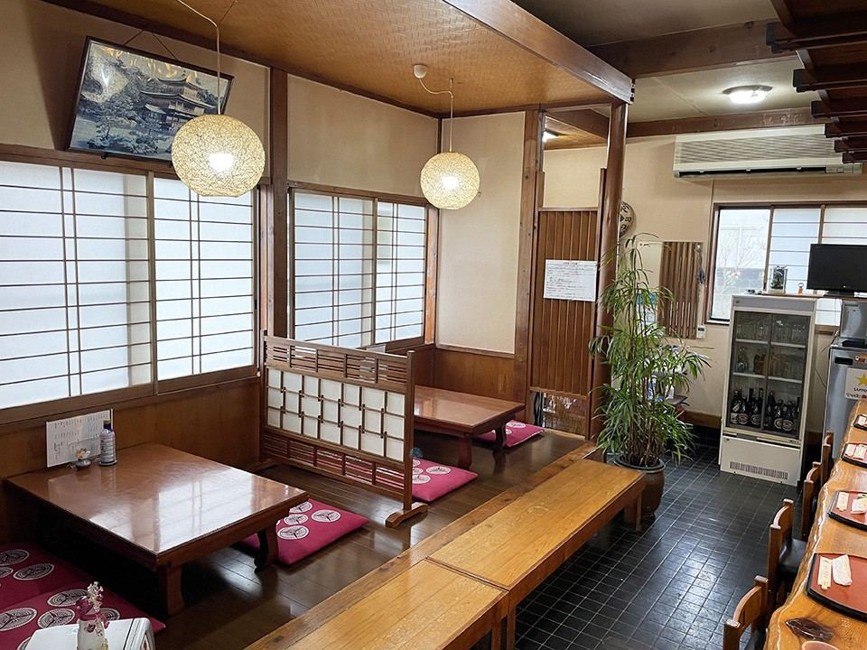

栃木県野木町 友沼｜昭和56年創業
シャリには町内産のコシヒカリを使い、旬のネタを一貫ずつ握っております。
出前とお持ち帰りも承っており、法事やお祝いの席は最大十五名様まで承ります。
ランチ1,200円〜



昭和五十六年、友沼のこの場所で暖簾を掛けました。以来、同じ場所で握り続けております。
シャリには、野木町でとれたコシヒカリを使っております。ネタは日々、目利きした魚を仕入れております。
野木町プレミアム商品券・ひまわり商品券もお使いいただけます。

上寿司は、まぐろ・サーモン・甘えび・帆立・玉子焼きなど、旬のネタを握り合わせております。上ちらしは、同じネタを丼一杯に盛り付けております。

早めのご予約をお願いしております。お電話一本で、店内と同じお料理をご用意いたします。
11:30〜14:00
17:00〜20:00
上寿司・上ちらしなど、お好きなお品をお包みします。
11:30〜14:00
17:00〜19:00
上寿司・上ちらし・巻物・助六寿司などをお届けします。
お座敷に座卓と座布団を並べて、大小のご宴会を承っております。最大十五名様まで、ご一緒にお使いいただけます。
お料理は、四千円より承っております。人数やご予算に合わせてご相談ください。

カウンター八席と、お座敷三十二席をご用意しております。お一人でのご来店から、ご家族・ご宴会まで、ご利用いただけます。
| 住所 | 〒329-0101 栃木県下都賀郡野木町友沼4708-3 |
|---|---|
| 電話 | 0280-56-2548 |
| 営業時間 | 11:30〜14:00／17:00〜20:00 |
| 定休日 | 月曜日・第2＆第3火曜日（不定休あり。お電話でご確認いただくと確実です） |
| 席数 | カウンター8席・座敷32席（計40席） |
| 駐車場 | 7台 |
| お支払い | 現金、野木町プレミアム商品券・ひまわり商品券がご利用いただけます |